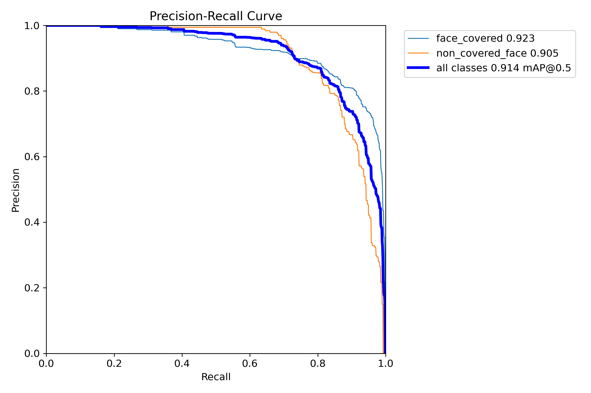
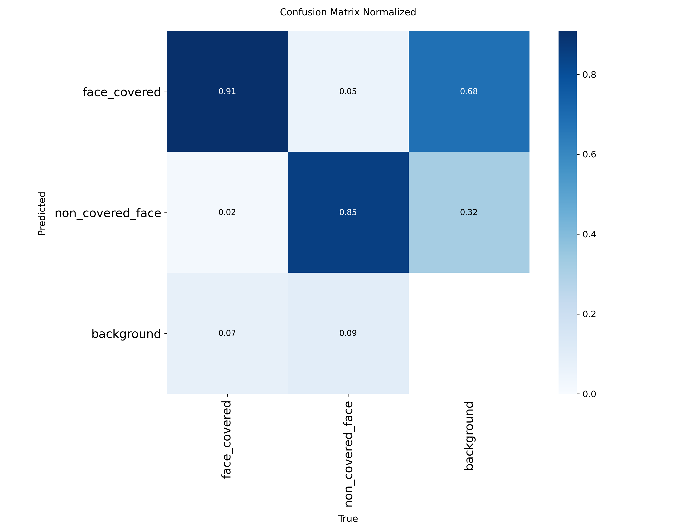
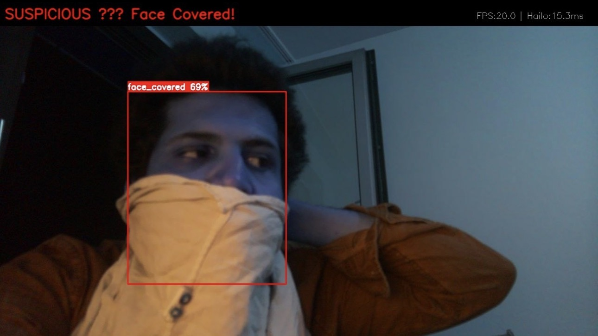
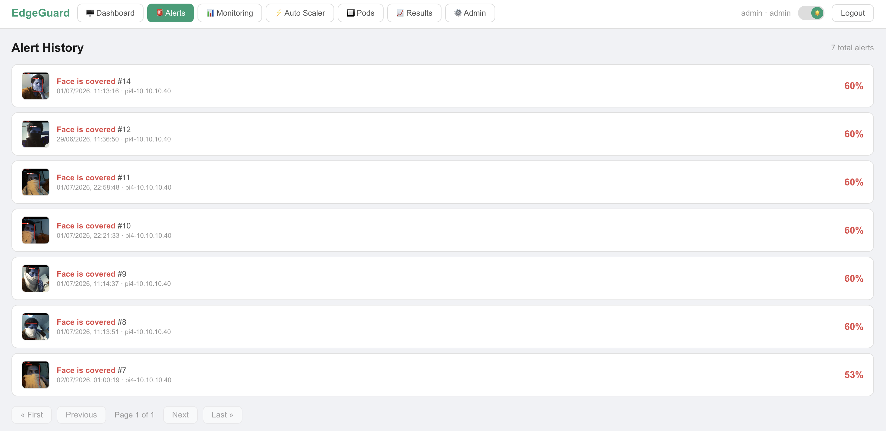

Real-time face coverage detection using YOLOv8n on the Hailo AI HAT+ NPU — from dataset collection through model training, format conversion, and live inference at 20 FPS.
The goal of Task 6 is to run real-time AI object detection on the cluster. EdgeGuard detects face coverage as a threat indicator — a person with a covered face (mask, hood, scarf covering features) triggers a suspicious alert, while a visible face is classified as safe. This is a binary classification per detected person in the camera frame.
The system consists of a Raspberry Pi 4 with an AI Camera Module capturing video, streaming it via ZMQ to the Raspberry Pi 5 which runs inference on the Hailo AI HAT+ neural processing unit. Inference results feed into the alert pipeline — suspicious detections are saved with a snapshot, stored in PostgreSQL, and pushed to Telegram.
The Hailo AI HAT+ is an M.2 AI accelerator that sits on top of the Raspberry Pi 5. It contains the Hailo-8L NPU (Neural Processing Unit) with 13 TOPS (Tera Operations Per Second) of AI compute — dedicated hardware designed specifically for running neural networks efficiently.
The key advantage over running on the Pi 5 CPU: the NPU handles matrix multiplications (the core operation in neural networks) in dedicated silicon at orders of magnitude higher speed and lower power than a general-purpose CPU core.
The Raspberry Pi AI Camera Module contains the IMX500 sensor — a Sony imaging sensor with an onboard ISP. The Pi 4 captures 1080p video from this camera and streams frames to Pi 5 for inference. The camera runs on a dedicated Pi 4 (sensor-node, 10.10.10.40) to keep camera capture isolated from inference workload.
Running both camera capture and AI inference on the same Pi 5 caused frame drops due to CPU contention. Separating them — Pi 4 captures, Pi 5 infers — gave clean 20 FPS at 1080p with no dropped frames.
We used Roboflow Universe as the primary data source — a public repository of annotated computer vision datasets. We found existing datasets for face mask detection and combined them with custom raw images captured by our own camera setup.
All data was processed and augmented inside Roboflow's online platform before export:
Classes: face_visible, face_covered
Augmentations: Horizontal flip
Rotation (±15°)
Brightness variation (±25%)
Blur (up to 1.5px)
Mosaic augmentation
Split: Train 80% / Validation 15% / Test 5%
We chose YOLOv8n (nano variant) from Ultralytics. The "n" (nano) variant was specifically chosen because it is the smallest and fastest YOLOv8 model — optimized for edge devices with limited compute. It trades some accuracy for significantly lower inference time, which is the right tradeoff for real-time surveillance at 20 FPS.
Training was done in Google Colab using the free GPU tier (T4 GPU).
Output: a best.pt PyTorch weights file.
from ultralytics import YOLO model = YOLO('yolov8n.pt') # start from pretrained nano weights model.train( data='dataset.yaml', # Roboflow exported dataset config epochs=100, imgsz=640, batch=16, device='cuda' # Colab T4 GPU ) # Output: runs/detect/train/weights/best.pt
After training, we evaluated the model on the held-out test set to measure how well it detects face coverage. The key metrics for object detection are:
Hardware: Google Colab — Tesla T4 GPU (14.9GB VRAM) Framework: Ultralytics YOLOv8 8.4.63 · PyTorch 2.11 · CUDA 12.8 Model: YOLOv8n (nano) — 73 layers · 3,006,038 parameters · 8.1 GFLOPs Epochs: 20 Image size: 640×640 Batch size: 16 Dataset: 326 validation images · 1,018 instances Classes: face_covered · non_covered_face Training time: 0.300 hours (~18 minutes) on T4 Output: best.pt — 6.2MB
| Metric | What it measures | All classes | face_covered | non_covered_face |
|---|---|---|---|---|
| mAP@0.5 | Mean Average Precision at IoU=0.5. Primary benchmark for object detection — measures how well the model finds AND localizes objects. 1.0 = perfect. | 0.951 (95.1%) | 0.962 | 0.939 |
| mAP@0.5:0.95 | Stricter version — averages mAP across IoU thresholds from 0.5 to 0.95. Penalizes imprecise bounding boxes. Industry standard for COCO benchmark. | 0.674 (67.4%) | 0.670 | 0.677 |
| Precision | Of all detections the model made, how many were correct? High precision = few false alarms. A person incorrectly flagged as suspicious when they are not. | 0.906 (90.6%) | 0.890 | 0.921 |
| Recall | Of all actual face-covered people in the frame, how many did the model find? High recall = few missed detections. A suspicious person who is not caught. | 0.857 (85.7%) | 0.911 | 0.803 |
| Confidence threshold | Minimum score to trigger alert. Below this = detection ignored. We chose 0.5 to balance false alarms vs missed detections. | 0.5 (50%) — tuned based on validation results | ||
| Inference speed (T4 GPU) | Speed during training validation on Colab T4 GPU. Reference only — not the deployment target. | Preprocess: 0.3ms · Inference: 3.0ms · Postprocess: 3.6ms = ~7ms/frame | ||
| Inference speed (Hailo NPU) | Actual deployment speed on the Hailo AI HAT+ NPU on Pi 5. This is the production performance figure. | 14–17ms/frame → 20 FPS @ 1080p | ||
Epoch 1: mAP50=0.789 mAP50-95=0.460 ← starting point Epoch 5: mAP50=0.890 mAP50-95=0.587 ← rapid improvement Epoch 10: mAP50=0.923 mAP50-95=0.628 ← strong performance Epoch 15: mAP50=0.937 mAP50-95=0.653 ← approaching plateau Epoch 20: mAP50=0.951 mAP50-95=0.673 ← final model (best.pt) All losses decreasing consistently: box_loss: 1.499 → 1.007 ← localization improving cls_loss: 2.107 → 0.543 ← classification improving dfl_loss: 1.172 → 0.971 ← distribution focal loss improving
A mAP@0.5 of 0.951 is excellent for a 2-class detection task. The model is particularly strong at detecting face_covered (mAP=0.962, recall=0.911) — the critical class for our surveillance use case. Missing a covered face is more costly than a false alarm, and the high recall on this class means very few suspicious events go undetected.
mAP@0.5 requires bounding boxes to overlap with the ground truth by at least 50%. mAP@0.5:0.95 averages across thresholds from 50% to 95% overlap — it penalizes imprecise bounding box locations. Our 0.674 score reflects that while the model correctly identifies and classifies people, bounding box precision varies. For a surveillance alert system, exact bounding box location matters less than correct classification — so 0.951 mAP@0.5 is the more relevant metric here.
mAP (Mean Average Precision) is the standard evaluation metric for object detection models used in academic papers and industry benchmarks. It combines both precision and recall into a single number — a model that is precise but misses many detections, or finds many objects but with wrong bounding boxes, will both score poorly on mAP. A value of 1.0 is perfect; typical real-world models score 0.5–0.8.


This was the most technically challenging part of Task 6. The Hailo AI HAT+ does not run standard PyTorch or ONNX models — it requires its own proprietary .HEF (Hailo Executable Format) file. Converting from PyTorch to HEF is a multi-step process that requires significant GPU compute.
The Raspberry Pi AI Camera comes with RPK (Raspberry Pi Kit) — a simpler way to deploy models. However RPK only works with the IMX500 sensor's onboard processing, not with the Hailo AI HAT+. Since we specifically wanted to use the Hailo AI HAT+ for its superior compute (13 TOPS vs IMX500's limited onboard processing), we had to go through the full HEF conversion pipeline.
Export from Ultralytics YOLOv8 to ONNX (Open Neural Network Exchange) — a framework-agnostic format. This step runs on any machine with Python and PyTorch.
Runs on: any machineHailo's Model Zoo parser converts ONNX to HAR (Hailo Archive). This step uses Hailo's Dataflow Compiler to optimize the model for Hailo hardware. Requires the Hailo SDK and a GPU for quantization calibration.
Requires: GPU + Hailo SDKCompile the HAR into HEF — the final binary that runs directly on the Hailo-8L NPU hardware. This is the most compute-intensive step — the compiler performs hardware-specific optimization and quantization.
Requires: GPU + Hailo CompilerCopy the .hef file to Pi 5. The HailoRT runtime loads and runs it on the Hailo AI HAT+ at inference time. No GPU needed for inference.
Runs on: Hailo AI HAT+Steps 2 and 3 require a powerful GPU to run the Hailo Dataflow Compiler. None of the team members had access to a local GPU machine, and the Pi 5 itself cannot run the compiler. This blocked deployment.
The Hailo Dataflow Compiler requires CUDA-capable GPU hardware with significant VRAM. Google Colab (where we trained) does not provide a persistent environment — the session times out and the Hailo SDK installation is lost. The Pi 5 CPU cannot run the compiler in a reasonable time.
We used Massive Compute — a cloud GPU rental service — to provision a GPU machine with sufficient VRAM and a persistent environment. We installed the Hailo SDK and Dataflow Compiler there, ran the full ONNX → HAR → HEF conversion pipeline, and downloaded the resulting .hef file. This took approximately 2–3 hours of GPU time.
# Step 1: Export PyTorch to ONNX python3 -c " from ultralytics import YOLO model = YOLO('best.pt') model.export(format='onnx', imgsz=640) " # Step 2: Parse ONNX to HAR using Hailo Model Zoo hailomz parse --hw-arch hailo8l \ --ckpt best.onnx \ yolov8n # Step 3: Optimize and compile HAR to HEF hailomz optimize --hw-arch hailo8l \ --har yolov8n.har \ --calib-path calibration_images/ hailomz compile --hw-arch hailo8l \ --har yolov8n_optimized.har # Output: yolov8n.hef — deploy this to Pi 5
Our first approach was streaming via HTTP MJPEG — the Pi 4 serves camera frames as a continuous HTTP response. This worked but had a 2–4 second latency due to HTTP connection overhead, buffering, and TCP retransmission. A 2–4 second delay between what the camera sees and what the AI processes makes real-time surveillance impossible.
We replaced HTTP MJPEG with ZeroMQ (ZMQ) PubSub — a high-performance asynchronous messaging library. The Pi 4 publishes compressed JPEG frames on a ZMQ socket. The Pi 5 subscribes and receives frames as fast as the network allows — with no HTTP overhead, no buffering, and no connection management. Latency dropped from 2–4 seconds to ~50ms.
# Pi 4 — Publisher (det.py) import zmq, cv2 context = zmq.Context() socket = context.socket(zmq.PUB) socket.bind("tcp://0.0.0.0:5555") while True: ret, frame = camera.read() _, buffer = cv2.imencode('.jpg', frame, [cv2.IMWRITE_JPEG_QUALITY, 80]) socket.send(buffer.tobytes()) # fire and forget — no ACK needed # Pi 5 — Subscriber (inference service) socket = context.socket(zmq.SUB) socket.connect("tcp://10.10.10.40:5555") socket.setsockopt(zmq.SUBSCRIBE, b"") while True: frame_bytes = socket.recv() # ~50ms latency frame = cv2.imdecode(np.frombuffer(frame_bytes, np.uint8), cv2.IMREAD_COLOR) # → run Hailo inference on frame
The model outputs a bounding box and class label for each detected person in the frame. We defined two classes during training:
A detection only triggers an alert if the model's confidence score is above 0.5 (50%). This threshold was chosen to balance false alarms (too low) against missed detections (too high).
Each alert stored in PostgreSQL contains: event type, confidence score, timestamp, camera ID, and MinIO image URL. The EdgeGuard frontend displays all alerts with pagination and the snapshot image.


CPU inference on Pi 5 ARM: 2–3 minutes per frame. Hailo AI HAT+ NPU: 14–17ms per frame. This makes the difference between a system that cannot do real-time video (CPU) and one that sustains 20 FPS at 1080p (NPU).
The Hailo Dataflow Compiler cannot run on the Pi 5 CPU within a reasonable timeframe. We solved this by using Massive Compute cloud GPUs. This is an important real-world constraint: edge deployment does not mean edge development — model compilation still requires cloud resources.
Replacing HTTP MJPEG with ZMQ PubSub was essential for real-time operation. The 50ms latency is imperceptible to the human eye and allows the AI system to react to events within the same video second they occur.
YOLOv8n (nano) is the smallest variant — optimized for edge devices. Larger models (YOLOv8s, m, l, x) would give better mAP but require more compute and memory, potentially exceeding what the Hailo-8L can run efficiently. For a binary classification task (face visible vs covered), the nano variant provides sufficient accuracy at the required frame rate.